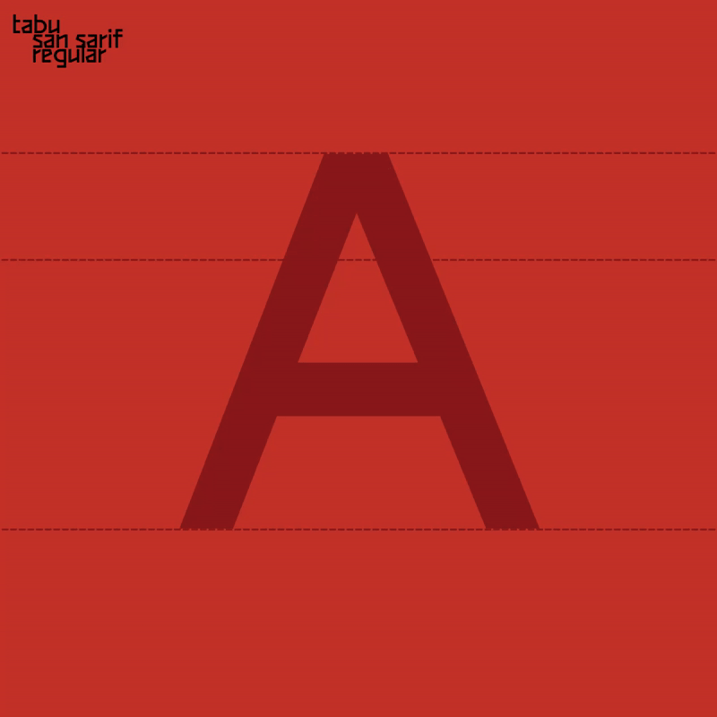
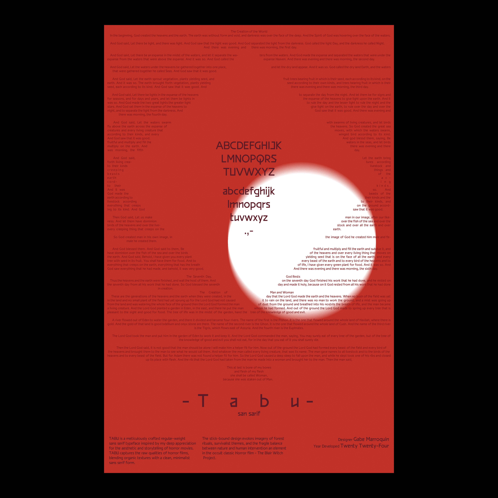
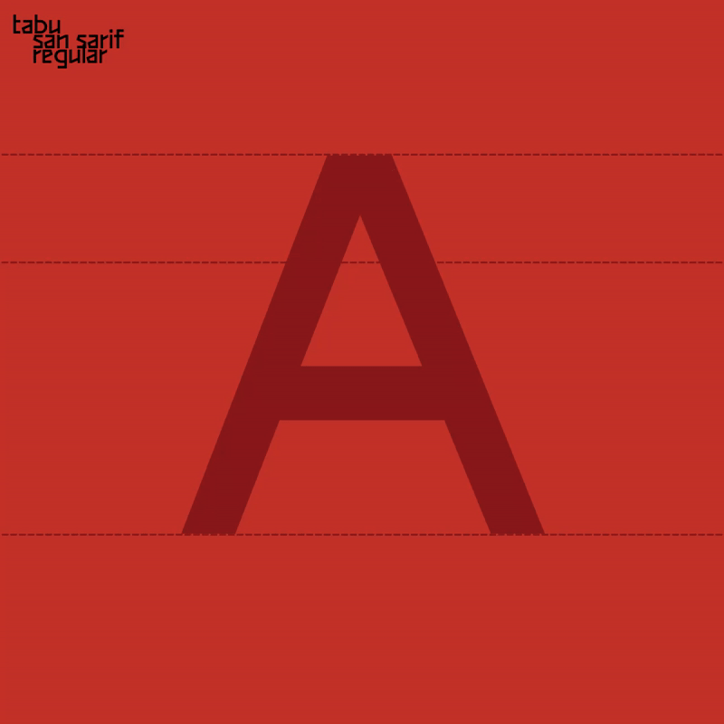
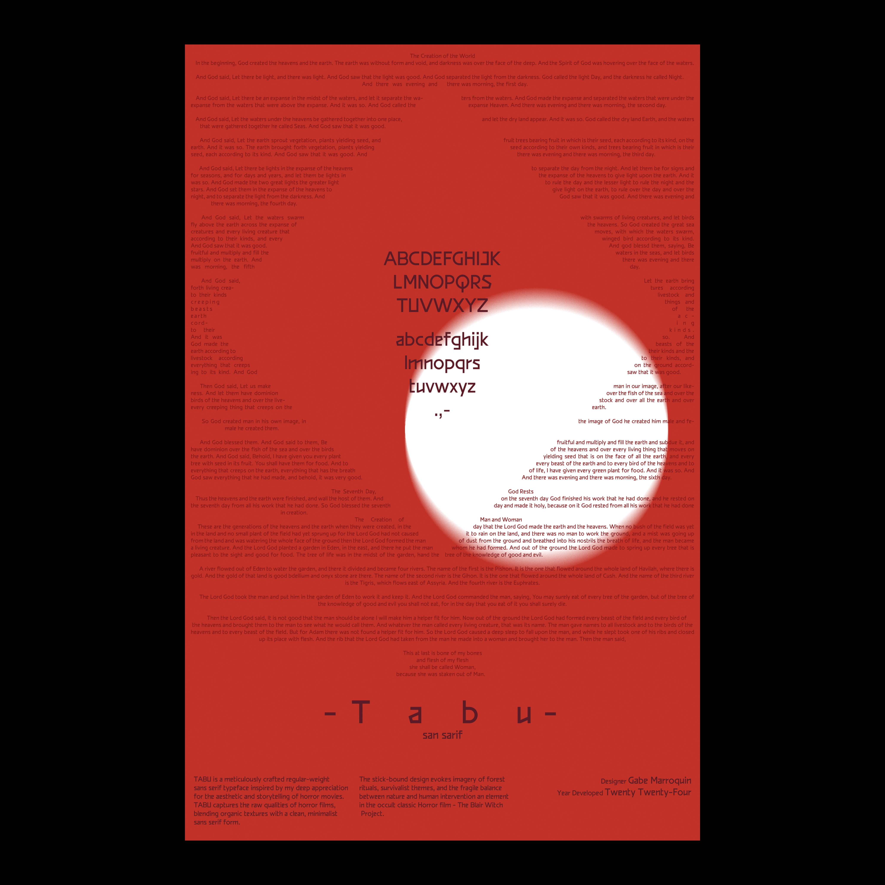

[About]
TABU is a meticulously crafted regular-weight sans serif typeface inspired by my deep appreciation for the aesthetic and storytelling of horror movies.
The typeface captures the raw and unsettling qualities of horror films, blending organic textures with a clean, minimalist sans serif form. The "stick-bound"
design evokes imagery of forest rituals, survivalist themes, and the fragile balance between nature and human intervention—a recurring element in classic and modern horror alike.
 


